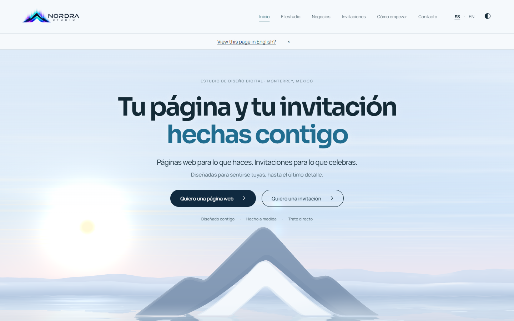
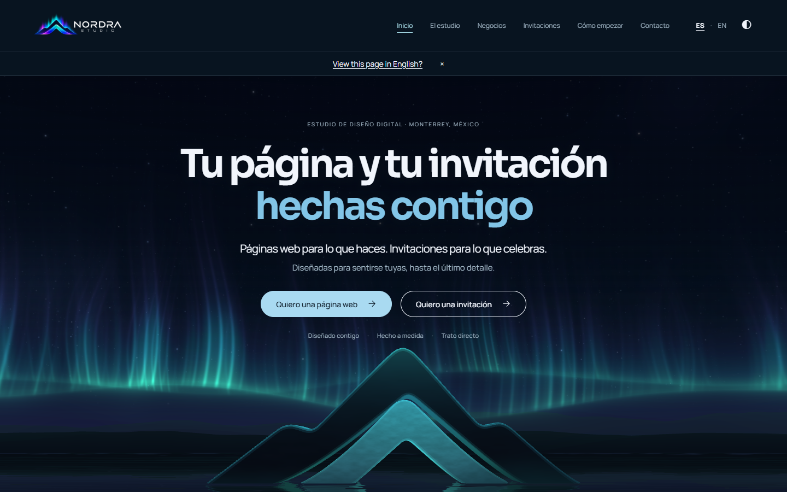
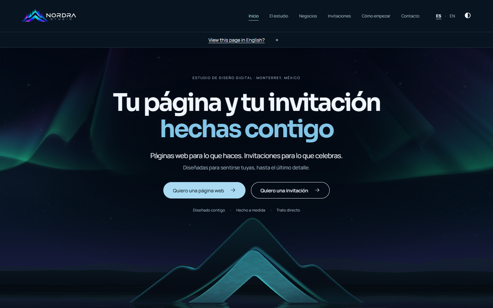
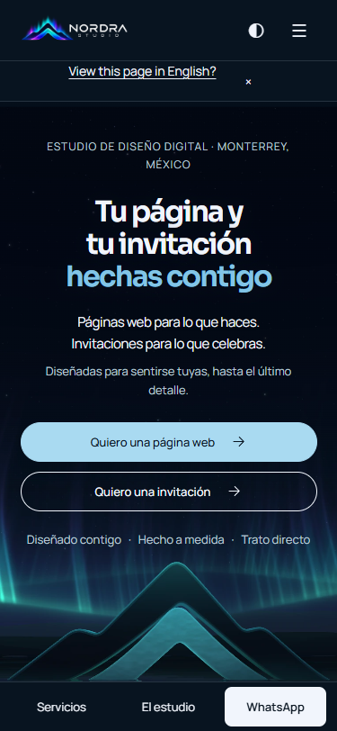
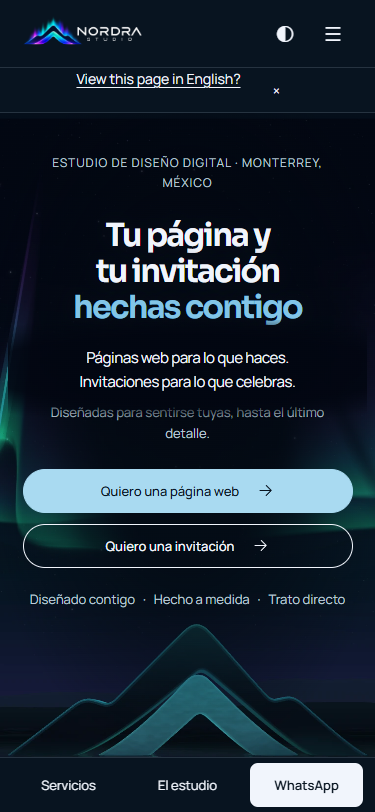
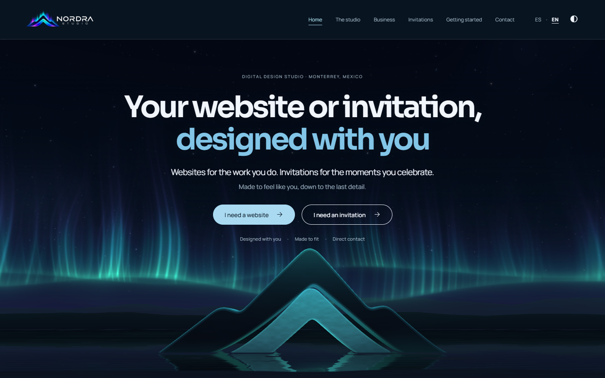
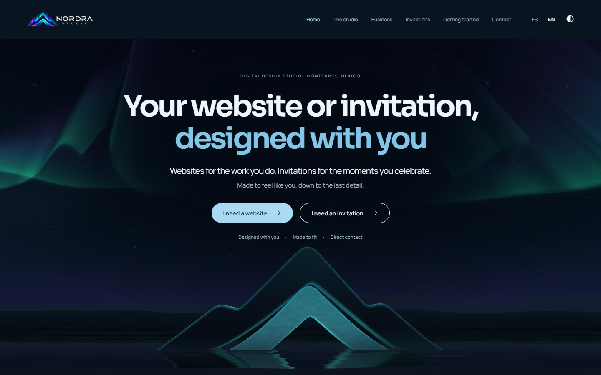
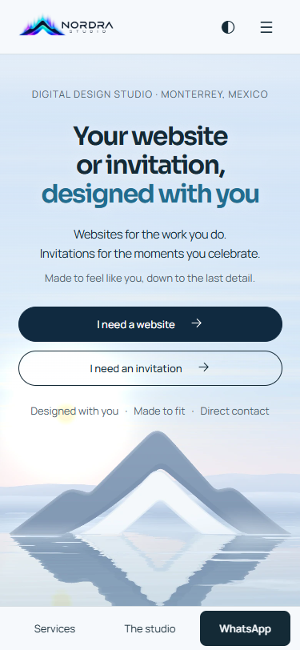
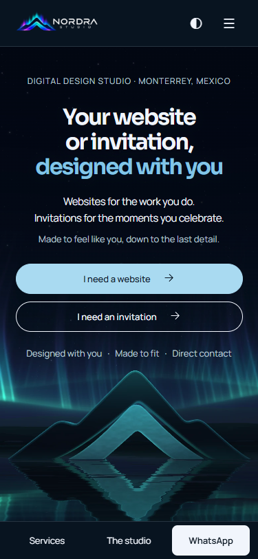
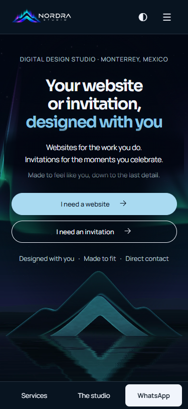

Comparación local frente a 492a87c en claude/auroras. Las dos cintas tienen distinto fondo, textura difusa, pliegues pequeños y un borde que se interrumpe. El pulso rosa se limita a partes del borde. Una máscara amplia suaviza la emisión detrás del texto. En claro la cortina no emite luz.
Video de Inicio · 10 s · Activa original · Activa suavizada en el banco
En el banco, el p95 pasó de 10,1 a 9,3 ms. En Inicio, a 1440 × 900 con Chrome local y DPR 1, el p95 pasó de 9,2 a 9,1 ms y la mediana de 5,3 a 5,4 ms. La muestra contiene 240 cuadros por compilación e incluye el reflejo. Se sincronizó la GPU leyendo un píxel. La escena dibujó 60 fps en ambos casos. En 375 × 812 hubo cero cuadros WebGL y cero solicitudes de Three.
Mediana desde navegación hasta el primer borrado del framebuffer de pantalla, con seis aperturas por tema y versión, alternando el orden. Chrome se abrió de nuevo para cada par.
| Tema | Base | Activa suavizada | Diferencia |
|---|---|---|---|
| Claro · primera página del navegador | 1493 ms | 1471 ms | -22 ms |
| Claro · segunda página | 883 ms | 861 ms | -22 ms |
| Oscuro · primera página del navegador | 1489 ms | 1495 ms | +6 ms |
| Oscuro · segunda página | 876 ms | 884 ms | +8 ms |
Resultados de este equipo y navegador. Seis cargas por combinación · Medición por cuadro.
| Recurso | Base | Ahora |
|---|---|---|
| Módulo diferido del paisaje | 41.948 B · 16,46 kB gzip | 42.305 B · 16,95 kB gzip |
| Three.js | 548.147 B | 548.160 B |
| Siete texturas móviles | 390.464 B | 449.012 B (+14,99 %) |
| Cuatro pósteres de teléfono | 113.840 B | 109.700 B (−3,64 %) |
| Suma móvil | 504.304 B | 558.712 B (+10,79 %) |
El teléfono selecciona un único póster para Inicio. Las siete texturas transparentes se usan en las páginas comerciales. Los dieciséis pósteres de todos los formatos suman 568.498 B frente a 592.952 B antes.
Relación de luminancia mínima muestreada dentro de las cajas del texto con los glifos ocultos, antes → después. Las cifras corresponden a los fotogramas capturados con nieve desactivada para aislar la comparación. El mínimo de botones toma ambos CTA.
| Vista | Titular | Acento | Subtítulo | Detalle | Botones |
|---|---|---|---|---|---|
| ES · 1440 px · claro | 11,68 → 11,68 | 4,52 → 4,52 | 11,66 → 11,66 | 4,75 → 4,75 | 11,55 → 11,55 |
| ES · 1440 px · oscuro | 11,85 → 16,92 | 3,89 → 9,32 | 7,72 → 17,02 | 8,53 → 9,67 | 12,36 → 12,36 |
| ES · 375 px · claro | 11,43 → 11,43 | 4,42 → 4,42 | 11,45 → 11,45 | 4,71 → 4,71 | 11,98 → 11,98 |
| ES · 375 px · oscuro | 17,25 → 17,98 | 10,24 → 10,47 | 12,2 → 18,15 | 10,31 → 11,59 | 12,36 → 12,36 |
| EN · 1440 px · claro | 11,68 → 11,68 | 4,52 → 4,52 | 11,67 → 11,67 | 4,76 → 4,76 | 11,54 → 11,54 |
| EN · 1440 px · oscuro | 11,85 → 16,24 | 3,89 → 9,32 | 7,72 → 17,02 | 8,53 → 9,67 | 12,36 → 12,36 |
| EN · 375 px · claro | 11,55 → 11,55 | 4,43 → 4,43 | 11,65 → 11,65 | 4,89 → 4,89 | 12,29 → 12,29 |
| EN · 375 px · oscuro | 16,07 → 16,99 | 9,55 → 10,35 | 15,93 → 18,06 | 11,21 → 11,31 | 12,36 → 12,36 |
Pasaron typecheck, npm test (255 + 36 pruebas y las comprobaciones de Posada), build y check:build. Se probó el margen de la base sobre el horizonte con cuatro posiciones de cámara y ambas cintas durante 180 segundos simulados. En las dos rutas se verificaron la pausa, la reanudación, el movimiento reducido y la parada fuera de pantalla. No se registraron excepciones de página. La analítica de Vercel devuelve 404 en el servidor local.
Commits locales: 3c0e85c banco, 01eefd5 cintas, 9402ed0 luz y reflejo, e1e87c4 y 6cdc715 teléfono, f1dafec pruebas y ceb8576 verificación de entradas del build y 636a44b contraste móvil.










